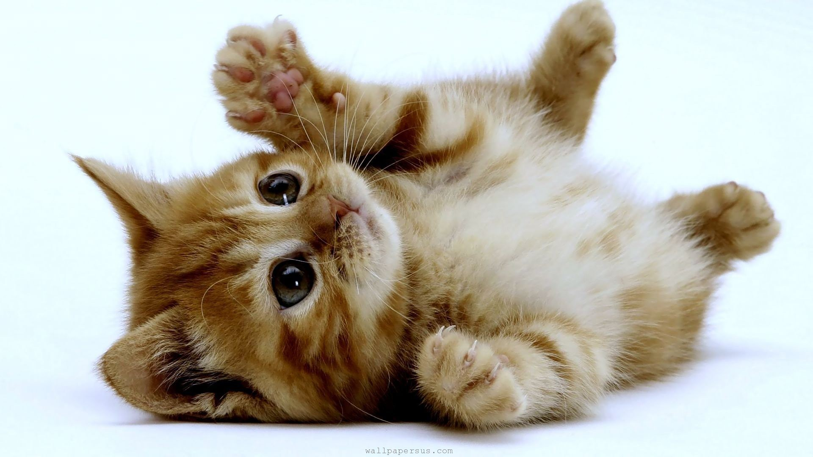
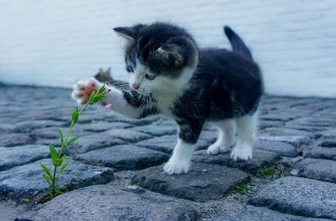
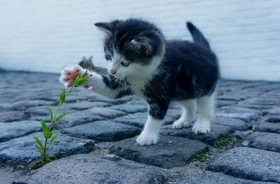

Ta strona jest jeszcze w wersji beta. Jeśli chcesz zobaczyć pełną wersję strony, to musisz poczekać kilka miesięcy.
KotoBlog
KotoBlog będzie blogiem, który będzie miał:
- obrazki
- filmiki
- informacje
- porady
- i inne rzeczy!
Zdjęcia Kotków

 



Kocie Filmiki
KotoBlog v0.16 został zaprojektowany i zrobiony przez Oliwiera Troć (2020 - 2020).